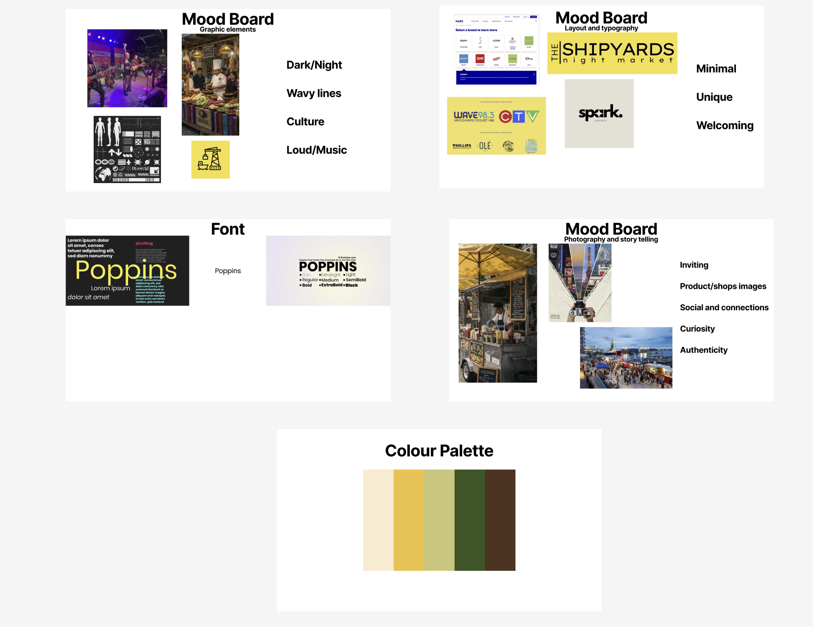
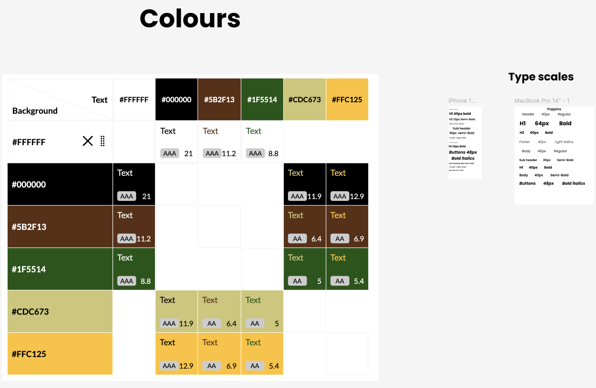
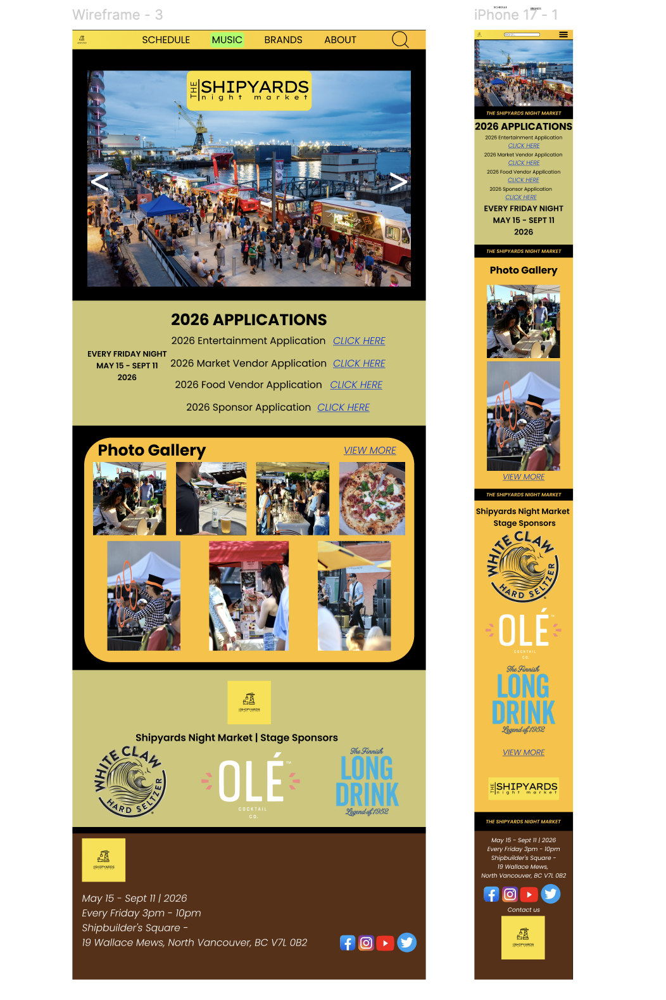
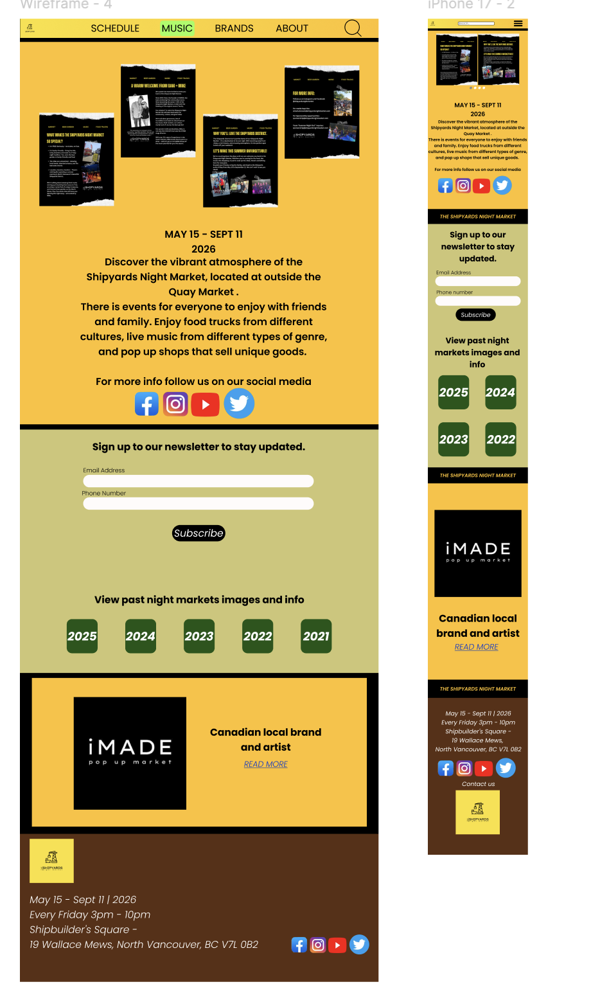
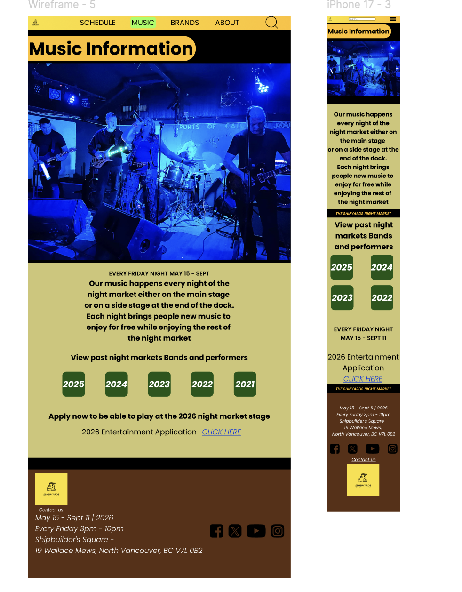

Idea boards
The early stages and ideas for the Shipyards NightMarket website redesign. These images show the mood board and the colour palette that I used for this project.
When I first started this project I came up with my ideas using mood boards and colour palette to get a better understanding of the design direction I wanted to take for this project. The mood board helped me to gather inspiration and visualize the overall aesthetic I wanted to achieve, while the colour palette allowed me to establish a cohesive and visually appealing color scheme for the website redesign.


Final Mockups
Here shows the final mockups of the website redesign. The new design successfully captures the lively atmosphere of Shipyards NightMarket while providing visitors with easy access to event details, vendor information, and other essential resources.
You will see for the final mockup of the website for desktop and mobile. The new design successfully captures the lively atmosphere of Shipyards NightMarket while providing visitors with easy access to event details, vendor information, and other essential resources.

